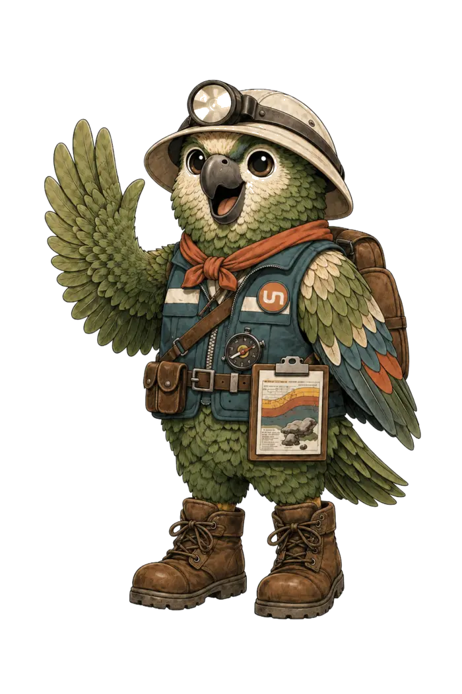
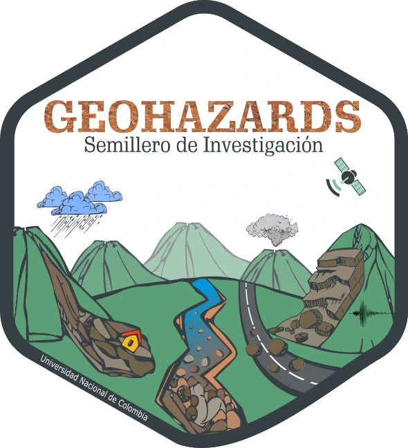

Curso corto para la toma de decisiones: normativa ambiental, condiciones biofísicas de la ladera, vulnerabilidad y planificación del Borde Urbano Rural Nororiental de Medellín.

El Semillero de Investigación GeoHazards
de la Universidad Nacional de Colombia
Facultad de Minas
Instrumentos para la toma de decisiones en el territorio
Se certifica que:
Ha completado satisfactoriamente los cinco módulos del curso corto en “Planificación y Gestión del Riesgo para la Toma de Decisiones” (20 horas), orientado al fortalecimiento de capacidades para la planificación territorial y la gestión del riesgo de desastres en el Borde Urbano Rural Nororiental de Medellín.